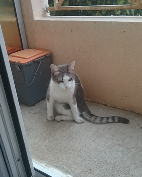
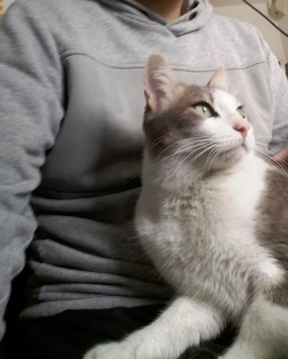
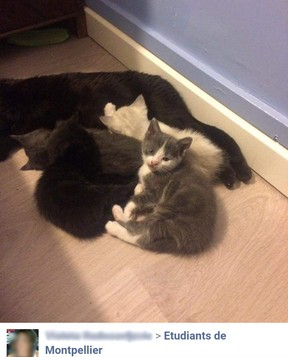
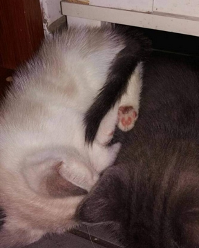

Minouchatte
 
L'idée d'avoir un petit chat me trottait dans la tête depuis quelques temps. Mon aventure avec les chats a commencé le 1er jour de mon installation à Montpellier. Pendant que je déballais mes affaires, une petite chatte est arrivée par le balcon (j'habitais au rez-de-chaussée). Suite à ce premier jour, elle est venue tous les jours me rendre visite. Pensant que c'était un mâle, je l'ai baptisé "Minouchat". C'est Théo, quelques mois plus tard lors de son arrivé à Montpellier, qui m'a fait remarquer que c'était une femelle. Nous l'avons donc appelé Minouchatte. Depuis le premier jour et pendant les mois qui ont suivis, Minouchatte venait nous voir quotidiennement. Mais un jour en rentrant à la maison, je l'ai retrouvée sur la route. Elle avait été percutée par une voiture. Nous l'avions emmené au vétérinaire en urgence et avons contacté ses propriétaires. Elles nous ont finalement dit le lendemain qu'ils ont fait le choix de la piquer car elle était trop mal en point.. Cela a été un crève-coeur pour nous. Théo, qui n'aimait pas les chats, s'était énormément attachée à cette petite chatte. C'est donc Minouchatte qui nous a déclenché notre amour pour les chats.
L'adoption
 
J'ai donc commencé à chercher des annonces de dons de chat sur Internet. Théo n'était pas vraiment emballé par l'idée car, à l'origine, il n'aimait pas vraiment les chats et sa seule expérience positive avec un chat fut finalement soldée par une grande tristesse.